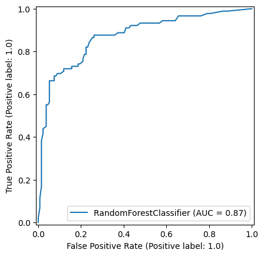
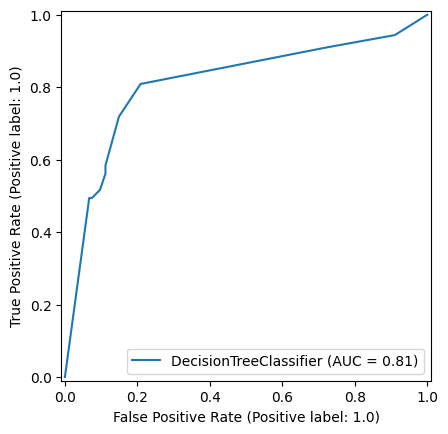
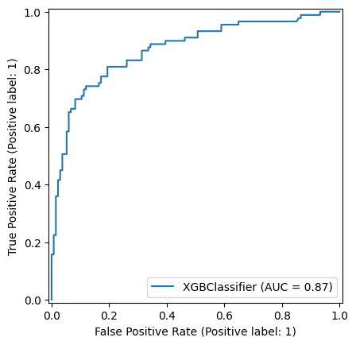
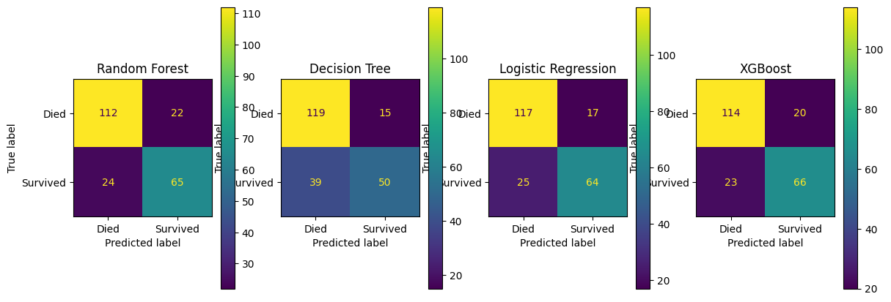
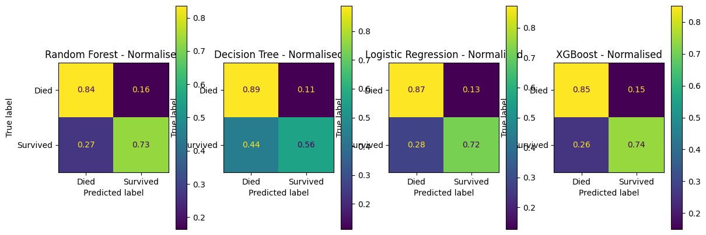
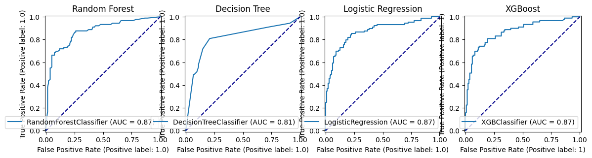
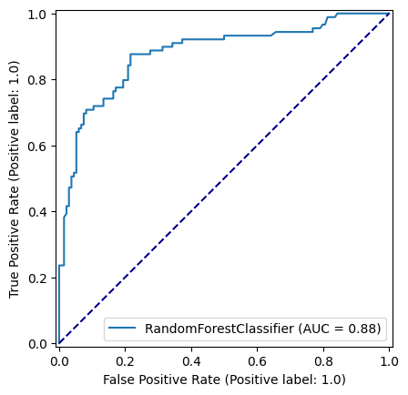
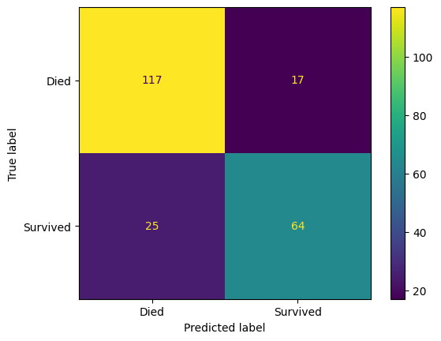
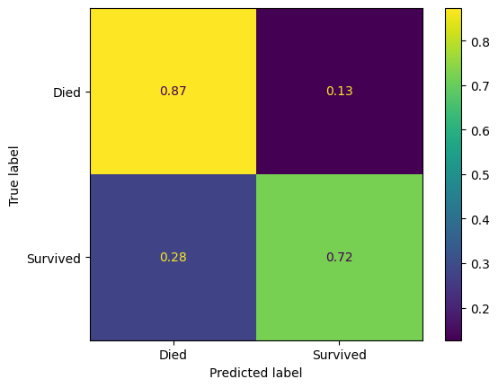

import numpy as np
import pandas as pd
# Import machine learning methods
from xgboost.sklearn import XGBClassifier
from sklearn.model_selection import train_test_split
from sklearn.tree import plot_tree
from sklearn.ensemble import AdaBoostClassifier
import plotly.express as px
import matplotlib.pyplot as plt
from sklearn.metrics import auc, roc_curve, RocCurveDisplay, f1_score, precision_score, \
recall_score, confusion_matrix, ConfusionMatrixDisplay, \
classification_report8 Boosted Trees for Classification: XGBoost, Catboost, AdaBoost, LightGBM, HistogramGradientBoosting (Titanic Dataset)
from sklearn.ensemble import RandomForestClassifier
from sklearn.tree import DecisionTreeClassifier
from sklearn.linear_model import LogisticRegression
from sklearn.preprocessing import StandardScalernp.random.seed(42)download_required = False
if download_required:
# Download processed data:
address = 'https://raw.githubusercontent.com/MichaelAllen1966/' + \
'1804_python_healthcare/master/titanic/data/processed_data.csv'
data = pd.read_csv(address)
# Create a data subfolder if one does not already exist
import os
data_directory ='../datasets/'
if not os.path.exists(data_directory):
os.makedirs(data_directory)
# Save data
data.to_csv(data_directory + 'processed_titanic_data.csv', index=False)data = pd.read_csv('../datasets/processed_titanic_data.csv')
# Make all data 'float' type
data = data.astype(float)data.head(10)| PassengerId | Survived | Pclass | Age | SibSp | Parch | Fare | AgeImputed | EmbarkedImputed | CabinLetterImputed | ... | Embarked_missing | CabinLetter_A | CabinLetter_B | CabinLetter_C | CabinLetter_D | CabinLetter_E | CabinLetter_F | CabinLetter_G | CabinLetter_T | CabinLetter_missing | |
|---|---|---|---|---|---|---|---|---|---|---|---|---|---|---|---|---|---|---|---|---|---|
| 0 | 1.0 | 0.0 | 3.0 | 22.0 | 1.0 | 0.0 | 7.2500 | 0.0 | 0.0 | 1.0 | ... | 0.0 | 0.0 | 0.0 | 0.0 | 0.0 | 0.0 | 0.0 | 0.0 | 0.0 | 1.0 |
| 1 | 2.0 | 1.0 | 1.0 | 38.0 | 1.0 | 0.0 | 71.2833 | 0.0 | 0.0 | 0.0 | ... | 0.0 | 0.0 | 0.0 | 1.0 | 0.0 | 0.0 | 0.0 | 0.0 | 0.0 | 0.0 |
| 2 | 3.0 | 1.0 | 3.0 | 26.0 | 0.0 | 0.0 | 7.9250 | 0.0 | 0.0 | 1.0 | ... | 0.0 | 0.0 | 0.0 | 0.0 | 0.0 | 0.0 | 0.0 | 0.0 | 0.0 | 1.0 |
| 3 | 4.0 | 1.0 | 1.0 | 35.0 | 1.0 | 0.0 | 53.1000 | 0.0 | 0.0 | 0.0 | ... | 0.0 | 0.0 | 0.0 | 1.0 | 0.0 | 0.0 | 0.0 | 0.0 | 0.0 | 0.0 |
| 4 | 5.0 | 0.0 | 3.0 | 35.0 | 0.0 | 0.0 | 8.0500 | 0.0 | 0.0 | 1.0 | ... | 0.0 | 0.0 | 0.0 | 0.0 | 0.0 | 0.0 | 0.0 | 0.0 | 0.0 | 1.0 |
| 5 | 6.0 | 0.0 | 3.0 | 28.0 | 0.0 | 0.0 | 8.4583 | 1.0 | 0.0 | 1.0 | ... | 0.0 | 0.0 | 0.0 | 0.0 | 0.0 | 0.0 | 0.0 | 0.0 | 0.0 | 1.0 |
| 6 | 7.0 | 0.0 | 1.0 | 54.0 | 0.0 | 0.0 | 51.8625 | 0.0 | 0.0 | 0.0 | ... | 0.0 | 0.0 | 0.0 | 0.0 | 0.0 | 1.0 | 0.0 | 0.0 | 0.0 | 0.0 |
| 7 | 8.0 | 0.0 | 3.0 | 2.0 | 3.0 | 1.0 | 21.0750 | 0.0 | 0.0 | 1.0 | ... | 0.0 | 0.0 | 0.0 | 0.0 | 0.0 | 0.0 | 0.0 | 0.0 | 0.0 | 1.0 |
| 8 | 9.0 | 1.0 | 3.0 | 27.0 | 0.0 | 2.0 | 11.1333 | 0.0 | 0.0 | 1.0 | ... | 0.0 | 0.0 | 0.0 | 0.0 | 0.0 | 0.0 | 0.0 | 0.0 | 0.0 | 1.0 |
| 9 | 10.0 | 1.0 | 2.0 | 14.0 | 1.0 | 0.0 | 30.0708 | 0.0 | 0.0 | 1.0 | ... | 0.0 | 0.0 | 0.0 | 0.0 | 0.0 | 0.0 | 0.0 | 0.0 | 0.0 | 1.0 |
10 rows × 26 columns
data.describe()| PassengerId | Survived | Pclass | Age | SibSp | Parch | Fare | AgeImputed | EmbarkedImputed | CabinLetterImputed | ... | Embarked_missing | CabinLetter_A | CabinLetter_B | CabinLetter_C | CabinLetter_D | CabinLetter_E | CabinLetter_F | CabinLetter_G | CabinLetter_T | CabinLetter_missing | |
|---|---|---|---|---|---|---|---|---|---|---|---|---|---|---|---|---|---|---|---|---|---|
| count | 891.000000 | 891.000000 | 891.000000 | 891.000000 | 891.000000 | 891.000000 | 891.000000 | 891.000000 | 891.000000 | 891.000000 | ... | 891.000000 | 891.000000 | 891.000000 | 891.000000 | 891.000000 | 891.000000 | 891.000000 | 891.000000 | 891.000000 | 891.000000 |
| mean | 446.000000 | 0.383838 | 2.308642 | 29.361582 | 0.523008 | 0.381594 | 32.204208 | 0.198653 | 0.002245 | 0.771044 | ... | 0.002245 | 0.016835 | 0.052750 | 0.066218 | 0.037037 | 0.035915 | 0.014590 | 0.004489 | 0.001122 | 0.771044 |
| std | 257.353842 | 0.486592 | 0.836071 | 13.019697 | 1.102743 | 0.806057 | 49.693429 | 0.399210 | 0.047351 | 0.420397 | ... | 0.047351 | 0.128725 | 0.223659 | 0.248802 | 0.188959 | 0.186182 | 0.119973 | 0.066890 | 0.033501 | 0.420397 |
| min | 1.000000 | 0.000000 | 1.000000 | 0.420000 | 0.000000 | 0.000000 | 0.000000 | 0.000000 | 0.000000 | 0.000000 | ... | 0.000000 | 0.000000 | 0.000000 | 0.000000 | 0.000000 | 0.000000 | 0.000000 | 0.000000 | 0.000000 | 0.000000 |
| 25% | 223.500000 | 0.000000 | 2.000000 | 22.000000 | 0.000000 | 0.000000 | 7.910400 | 0.000000 | 0.000000 | 1.000000 | ... | 0.000000 | 0.000000 | 0.000000 | 0.000000 | 0.000000 | 0.000000 | 0.000000 | 0.000000 | 0.000000 | 1.000000 |
| 50% | 446.000000 | 0.000000 | 3.000000 | 28.000000 | 0.000000 | 0.000000 | 14.454200 | 0.000000 | 0.000000 | 1.000000 | ... | 0.000000 | 0.000000 | 0.000000 | 0.000000 | 0.000000 | 0.000000 | 0.000000 | 0.000000 | 0.000000 | 1.000000 |
| 75% | 668.500000 | 1.000000 | 3.000000 | 35.000000 | 1.000000 | 0.000000 | 31.000000 | 0.000000 | 0.000000 | 1.000000 | ... | 0.000000 | 0.000000 | 0.000000 | 0.000000 | 0.000000 | 0.000000 | 0.000000 | 0.000000 | 0.000000 | 1.000000 |
| max | 891.000000 | 1.000000 | 3.000000 | 80.000000 | 8.000000 | 6.000000 | 512.329200 | 1.000000 | 1.000000 | 1.000000 | ... | 1.000000 | 1.000000 | 1.000000 | 1.000000 | 1.000000 | 1.000000 | 1.000000 | 1.000000 | 1.000000 | 1.000000 |
8 rows × 26 columns
# Drop Passengerid (axis=1 indicates we are removing a column rather than a row)
# We drop passenger ID as it is not original data
# inplace=True means change the dataframe itself - don't create a copy with this column dropped
data.drop('PassengerId', inplace=True, axis=1)8.1 Divide into X (features) and y (labels)
X = data.drop('Survived',axis=1) # X = all 'data' except the 'survived' column
y = data['Survived'] # y = 'survived' column from 'data'8.2 Divide into training and tets sets
X_train, X_test, y_train, y_test = train_test_split(X, y, test_size = 0.25, random_state=42)8.3 Fit decision tree model
model = XGBClassifier(random_state=42)
model = model.fit(X_train,y_train)8.4 Predict values
# Predict training and test set labels
y_pred_train = model.predict(X_train)
y_pred_test = model.predict(X_test)8.5 Calculate accuracy
# The shorthand below says to check each predicted y value against the actual
# y value in the training data. This gives a list of True and False values
# for each prediction, where True indicates the predicted value matches the
# actual value. Then we take the mean of these Boolean values, which gives
# us a proportion (where if all values were True, the proportion would be 1.0)
# If you want to see why that works, just uncomment the following line of code
# to see what y_pred_train == y_train is doing.
# print (y_pred_train == y_train)
accuracy_train = np.mean(y_pred_train == y_train)
accuracy_test = np.mean(y_pred_test == y_test)
print (f'Accuracy of predicting training data = {accuracy_train}')
print (f'Accuracy of predicting test data = {accuracy_test}')Accuracy of predicting training data = 0.9730538922155688
Accuracy of predicting test data = 0.8071748878923767# Show first ten predicted classes
classes = model.predict(X_test)
classes[0:10]array([0, 0, 0, 1, 1, 1, 1, 0, 0, 1])# Show first ten predicted probabilities
probabilities = model.predict_proba(X_test)
probabilities[0:10]array([[0.86352104, 0.13647896],
[0.7883349 , 0.2116651 ],
[0.5199659 , 0.48003414],
[0.00145131, 0.9985487 ],
[0.07196659, 0.9280334 ],
[0.01444411, 0.9855559 ],
[0.22169638, 0.7783036 ],
[0.99416023, 0.00583977],
[0.67432725, 0.32567278],
[0.00534749, 0.9946525 ]], dtype=float32)8.6 Calculate other metrics
f1_score_xg = f1_score(y_test, y_pred_test, average='macro')
precision_score_xg = precision_score(y_test, y_pred_test, average='macro')
recall_score_xg = recall_score(y_test, y_pred_test, average='macro')
print (f'Accuracy of predicting test data = {accuracy_test}')
print (f'f1 score = {f1_score_xg}')
print (f'precision score = {recall_score_xg}')
print (f'recall score = {recall_score_xg}')Accuracy of predicting test data = 0.8071748878923767
f1 score = 0.7978070637849236
precision score = 0.7961596511822908
recall score = 0.7961596511822908print(classification_report(y_test, y_pred_test)) precision recall f1-score support
0.0 0.83 0.85 0.84 134
1.0 0.77 0.74 0.75 89
accuracy 0.81 223
macro avg 0.80 0.80 0.80 223
weighted avg 0.81 0.81 0.81 223
9 Comparing Performance
def train_and_run(model):
model.fit(X_train,y_train)
y_pred_train = model.predict(X_train)
y_pred_test = model.predict(X_test)
accuracy_train = np.mean(y_pred_train == y_train)
accuracy_test = np.mean(y_pred_test == y_test)
print (f'Accuracy of predicting training data = {accuracy_train:.3f}')
print (f'Accuracy of predicting test data = {accuracy_test:.3f}')np.random.seed(42)
train_and_run(model = LogisticRegression())Accuracy of predicting training data = 0.804
Accuracy of predicting test data = 0.807c:\HSMA\_HSMA 6\Sammi's Sessions\h6_4e_boosted_trees\.venv\Lib\site-packages\sklearn\linear_model\_logistic.py:469: ConvergenceWarning: lbfgs failed to converge (status=1):
STOP: TOTAL NO. of ITERATIONS REACHED LIMIT.
Increase the number of iterations (max_iter) or scale the data as shown in:
https://scikit-learn.org/stable/modules/preprocessing.html
Please also refer to the documentation for alternative solver options:
https://scikit-learn.org/stable/modules/linear_model.html#logistic-regression
n_iter_i = _check_optimize_result(np.random.seed(42)
train_and_run(model = DecisionTreeClassifier(random_state=42))Accuracy of predicting training data = 0.984
Accuracy of predicting test data = 0.758np.random.seed(42)
train_and_run(model = RandomForestClassifier())Accuracy of predicting training data = 0.984
Accuracy of predicting test data = 0.794np.random.seed(42)
train_and_run(model = XGBClassifier())Accuracy of predicting training data = 0.973
Accuracy of predicting test data = 0.8079.0.0.1 Random Forest
np.random.seed(42)
random_forest_model = RandomForestClassifier()
random_forest_model = random_forest_model.fit(X_train,y_train)
y_pred_train_rf = random_forest_model.predict(X_train)
y_pred_test_rf = random_forest_model.predict(X_test)
roc_curve_rf = RocCurveDisplay.from_estimator(
random_forest_model, X_test, y_test
)
confusion_matrix_rf = ConfusionMatrixDisplay(
confusion_matrix=confusion_matrix(
y_true=y_test,
y_pred=y_pred_test_rf
),
display_labels=["Died", "Survived"]
)
confusion_matrix_rf_normalised = ConfusionMatrixDisplay(
confusion_matrix=confusion_matrix(
y_true=y_test,
y_pred=y_pred_test_rf,
normalize='true'
),
display_labels=["Died", "Survived"]
)
9.0.0.2 Decision Tree
np.random.seed(42)
decision_tree_model = DecisionTreeClassifier(max_depth=6)
decision_tree_model = decision_tree_model.fit(X_train,y_train)
y_pred_train_dt = decision_tree_model.predict(X_train)
y_pred_test_dt = decision_tree_model.predict(X_test)
roc_curve_dt = RocCurveDisplay.from_estimator(
decision_tree_model, X_test, y_test
)
confusion_matrix_dt = ConfusionMatrixDisplay(
confusion_matrix=confusion_matrix(
y_true=y_test,
y_pred=y_pred_test_dt
),
display_labels=["Died", "Survived"]
)
confusion_matrix_dt_normalised = ConfusionMatrixDisplay(
confusion_matrix=confusion_matrix(
y_true=y_test,
y_pred=y_pred_test_dt,
normalize='true'
),
display_labels=["Died", "Survived"]
)
9.0.0.3 Logistic Regression
np.random.seed(42)
def standardise_data(X_train, X_test):
# Initialise a new scaling object for normalising input data
sc = StandardScaler()
# Apply the scaler to the training and test sets
train_std=sc.fit_transform(X_train)
test_std=sc.fit_transform(X_test)
return train_std, test_std
X_train_standardised, X_test_standardised = standardise_data(X_train, X_test)
logistic_regression_model = LogisticRegression()
logistic_regression_model.fit(X_train_standardised,y_train)
y_pred_train_lr = logistic_regression_model.predict(X_train_standardised)
y_pred_test_lr = logistic_regression_model.predict(X_test_standardised)
roc_curve_lr = RocCurveDisplay.from_estimator(
logistic_regression_model, X_test_standardised, y_test
)
confusion_matrix_lr = ConfusionMatrixDisplay(
confusion_matrix=confusion_matrix(
y_true=y_test,
y_pred=y_pred_test_lr
),
display_labels=["Died", "Survived"]
)
confusion_matrix_lr_normalised = ConfusionMatrixDisplay(
confusion_matrix=confusion_matrix(
y_true=y_test,
y_pred=y_pred_test_lr,
normalize='true'
),
display_labels=["Died", "Survived"]
)
np.random.seed(42)
xgboost_model = XGBClassifier()
xgboost_model = xgboost_model.fit(X_train,y_train)
y_pred_train_xg = xgboost_model.predict(X_train)
y_pred_test_xg = xgboost_model.predict(X_test)
roc_curve_xg = RocCurveDisplay.from_estimator(
xgboost_model, X_test, y_test
)
confusion_matrix_xg = ConfusionMatrixDisplay(
confusion_matrix=confusion_matrix(
y_true=y_test,
y_pred=y_pred_test_xg
),
display_labels=["Died", "Survived"]
)
confusion_matrix_xg_normalised = ConfusionMatrixDisplay(
confusion_matrix=confusion_matrix(
y_true=y_test,
y_pred=y_pred_test_xg,
normalize='true'
),
display_labels=["Died", "Survived"]
)
fig, (ax1, ax2, ax3, ax4) = plt.subplots(1, 4, figsize=(14, 5))
confusion_matrix_lr.plot(ax=ax1)
ax1.title.set_text('Logistic Regression')
confusion_matrix_dt.plot(ax=ax2)
ax2.title.set_text('Decision Tree')
confusion_matrix_rf.plot(ax=ax3)
ax3.title.set_text('Random Forest')
confusion_matrix_xg.plot(ax=ax4)
ax4.title.set_text('XGBoost')
fig, (ax1, ax2, ax3, ax4) = plt.subplots(1, 4, figsize=(14, 5))
confusion_matrix_rf_normalised.plot(ax=ax1)
ax1.title.set_text('Random Forest - Normalised')
confusion_matrix_dt_normalised.plot(ax=ax2)
ax2.title.set_text('Decision Tree - Normalised')
confusion_matrix_lr_normalised.plot(ax=ax3)
ax3.title.set_text('Logistic Regression - Normalised')
confusion_matrix_xg_normalised.plot(ax=ax4)
ax4.title.set_text('XGBoost - Normalised')
fig, (ax1, ax2, ax3, ax4) = plt.subplots(1, 4, figsize=(14, 5))
roc_curve_rf.plot(ax=ax1)
ax1.title.set_text('Random Forest')
ax1.plot([0, 1], [0, 1], color='darkblue', linestyle='--')
roc_curve_dt.plot(ax=ax2)
ax2.title.set_text('Decision Tree')
ax2.plot([0, 1], [0, 1], color='darkblue', linestyle='--')
roc_curve_lr.plot(ax=ax3)
ax3.title.set_text('Logistic Regression')
ax3.plot([0, 1], [0, 1], color='darkblue', linestyle='--')
roc_curve_xg.plot(ax=ax4)
ax4.title.set_text('XGBoost')
ax4.plot([0, 1], [0, 1], color='darkblue', linestyle='--')
10 XGBoost - Parallel Computation
from datetime import datetime10.0.1 Time a standard xgboost training
np.random.seed(42)
start_at = datetime.now()
train_and_run(model = XGBClassifier())
print("Duration =", (datetime.now() - start_at))Accuracy of predicting training data = 0.973
Accuracy of predicting test data = 0.807
Duration = 0:00:00.08904010.0.2 Time a parallel xgboost training
np.random.seed(42)
start_at = datetime.now()
train_and_run(model = XGBClassifier(nthread=-1))
print("Duration =", (datetime.now() - start_at))Accuracy of predicting training data = 0.973
Accuracy of predicting test data = 0.807
Duration = 0:00:00.08374310.1 Hyperparameters
10.1.1 n estimators (trees per forest)
accuracy_results = []
for i in range(10, 500, 10):
model = model = XGBClassifier(n_estimators=i, random_state=42, nthread=-1)
model.fit(X_train,y_train)
y_pred_train = model.predict(X_train)
y_pred_test = model.predict(X_test)
accuracy_train = np.mean(y_pred_train == y_train)
accuracy_test = np.mean(y_pred_test == y_test)
accuracy_results.append({'accuracy_train': accuracy_train, 'accuracy_test': accuracy_test, 'n_estimators': i})
px.line(pd.DataFrame(accuracy_results).melt(id_vars='n_estimators'),
x='n_estimators', y='value', color='variable')ValueError: Mime type rendering requires nbformat>=4.2.0 but it is not installedpd.DataFrame(accuracy_results).set_index("n_estimators").sort_values(by=["accuracy_test"], ascending=False)| accuracy_train | accuracy_test | |
|---|---|---|
| n_estimators | ||
| 10 | 0.901198 | 0.847534 |
| 20 | 0.931138 | 0.834081 |
| 30 | 0.941617 | 0.829596 |
| 40 | 0.950599 | 0.820628 |
| 50 | 0.956587 | 0.820628 |
| 70 | 0.965569 | 0.820628 |
| 60 | 0.965569 | 0.816143 |
| 80 | 0.965569 | 0.811659 |
| 130 | 0.976048 | 0.811659 |
| 230 | 0.980539 | 0.811659 |
| 220 | 0.980539 | 0.807175 |
| 280 | 0.980539 | 0.807175 |
| 270 | 0.980539 | 0.807175 |
| 260 | 0.980539 | 0.807175 |
| 240 | 0.980539 | 0.807175 |
| 250 | 0.980539 | 0.807175 |
| 90 | 0.970060 | 0.807175 |
| 100 | 0.973054 | 0.807175 |
| 360 | 0.980539 | 0.802691 |
| 350 | 0.980539 | 0.802691 |
| 340 | 0.980539 | 0.802691 |
| 320 | 0.980539 | 0.802691 |
| 310 | 0.980539 | 0.802691 |
| 300 | 0.980539 | 0.802691 |
| 290 | 0.980539 | 0.802691 |
| 390 | 0.980539 | 0.802691 |
| 110 | 0.974551 | 0.802691 |
| 120 | 0.974551 | 0.802691 |
| 210 | 0.979042 | 0.802691 |
| 200 | 0.979042 | 0.802691 |
| 190 | 0.979042 | 0.802691 |
| 400 | 0.980539 | 0.798206 |
| 450 | 0.980539 | 0.798206 |
| 470 | 0.980539 | 0.798206 |
| 480 | 0.980539 | 0.798206 |
| 440 | 0.980539 | 0.798206 |
| 430 | 0.980539 | 0.798206 |
| 420 | 0.980539 | 0.798206 |
| 170 | 0.979042 | 0.798206 |
| 330 | 0.980539 | 0.798206 |
| 380 | 0.980539 | 0.798206 |
| 180 | 0.979042 | 0.798206 |
| 140 | 0.977545 | 0.798206 |
| 150 | 0.979042 | 0.798206 |
| 160 | 0.979042 | 0.798206 |
| 490 | 0.980539 | 0.798206 |
| 410 | 0.980539 | 0.793722 |
| 370 | 0.980539 | 0.793722 |
| 460 | 0.980539 | 0.793722 |
10.1.2 n estimators (trees per forest) - with max depth of 5
accuracy_results = []
for i in range(10, 200, 10):
model = XGBClassifier(n_estimators=i, random_state=42, max_depth=5, nthread=-1)
model.fit(X_train,y_train)
y_pred_train = model.predict(X_train)
y_pred_test = model.predict(X_test)
accuracy_train = np.mean(y_pred_train == y_train)
accuracy_test = np.mean(y_pred_test == y_test)
accuracy_results.append({'accuracy_train': accuracy_train, 'accuracy_test': accuracy_test, 'n_estimators': i})
px.line(pd.DataFrame(accuracy_results).melt(id_vars='n_estimators'),
x='n_estimators', y='value', color='variable')ValueError: Mime type rendering requires nbformat>=4.2.0 but it is not installedpd.DataFrame(accuracy_results).set_index("n_estimators").sort_values(by=["accuracy_test"], ascending=False)| accuracy_train | accuracy_test | |
|---|---|---|
| n_estimators | ||
| 30 | 0.926647 | 0.843049 |
| 20 | 0.913174 | 0.838565 |
| 40 | 0.937126 | 0.829596 |
| 50 | 0.941617 | 0.825112 |
| 10 | 0.899701 | 0.820628 |
| 80 | 0.962575 | 0.820628 |
| 100 | 0.964072 | 0.820628 |
| 60 | 0.952096 | 0.820628 |
| 70 | 0.956587 | 0.816143 |
| 90 | 0.964072 | 0.816143 |
| 110 | 0.968563 | 0.811659 |
| 120 | 0.970060 | 0.811659 |
| 130 | 0.973054 | 0.807175 |
| 140 | 0.971557 | 0.802691 |
| 190 | 0.977545 | 0.802691 |
| 150 | 0.974551 | 0.798206 |
| 160 | 0.976048 | 0.798206 |
| 170 | 0.977545 | 0.798206 |
| 180 | 0.977545 | 0.798206 |
np.random.seed(42)
best_n_estimators = pd.DataFrame(accuracy_results).sort_values(by=["accuracy_test"], ascending=False).head(1)['n_estimators'].values[0]
model = RandomForestClassifier(n_estimators=best_n_estimators, random_state=42, max_depth=8)
model.fit(X_train,y_train)
y_pred_train = model.predict(X_train)
y_pred_test = model.predict(X_test)
roc_curve = RocCurveDisplay.from_estimator(
model, X_test, y_test
)
fig = roc_curve.figure_
ax = roc_curve.ax_
ax.plot([0, 1], [0, 1], color='darkblue', linestyle='--')
ConfusionMatrixDisplay(
confusion_matrix=confusion_matrix(
y_true=y_test,
y_pred=y_pred_test
),
display_labels=["Died", "Survived"]
).plot()
ConfusionMatrixDisplay(
confusion_matrix=confusion_matrix(
y_true=y_test,
y_pred=y_pred_test,
normalize='true'
),
display_labels=["Died", "Survived"]
).plot()
10.2 Learning Rate (ETA)
import numpy as npaccuracy_results = []
for i in np.arange(0.005, 0.2, 0.01):
model = XGBClassifier(learning_rate=i, random_state=42, nthread=-1)
model.fit(X_train,y_train)
y_pred_train = model.predict(X_train)
y_pred_test = model.predict(X_test)
accuracy_train = np.mean(y_pred_train == y_train)
accuracy_test = np.mean(y_pred_test == y_test)
accuracy_results.append({'accuracy_train': accuracy_train, 'accuracy_test': accuracy_test, 'learning_rate': i})
px.line(pd.DataFrame(accuracy_results).melt(id_vars='learning_rate'),
x='learning_rate', y='value', color='variable')ValueError: Mime type rendering requires nbformat>=4.2.0 but it is not installed10.3 Min child weight
accuracy_results = []
for i in range(2, 15):
model = XGBClassifier(min_child_weight=i, random_state=42, nthread=-1)
model.fit(X_train,y_train)
y_pred_train = model.predict(X_train)
y_pred_test = model.predict(X_test)
accuracy_train = np.mean(y_pred_train == y_train)
accuracy_test = np.mean(y_pred_test == y_test)
accuracy_results.append({'accuracy_train': accuracy_train, 'accuracy_test': accuracy_test, 'min_child_weight': i})
px.line(pd.DataFrame(accuracy_results).melt(id_vars='min_child_weight'),
x='min_child_weight', y='value', color='variable')ValueError: Mime type rendering requires nbformat>=4.2.0 but it is not installed10.4 Subsample
https://blog.cambridgespark.com/hyperparameter-tuning-in-xgboost-4ff9100a3b2f
accuracy_results = []
for i in np.arange(0.05, 1, 0.05):
model = XGBClassifier(subsample=i, random_state=42, nthread=-1)
model.fit(X_train,y_train)
y_pred_train = model.predict(X_train)
y_pred_test = model.predict(X_test)
accuracy_train = np.mean(y_pred_train == y_train)
accuracy_test = np.mean(y_pred_test == y_test)
accuracy_results.append({'accuracy_train': accuracy_train, 'accuracy_test': accuracy_test, 'subsample': i})
px.line(pd.DataFrame(accuracy_results).melt(id_vars='subsample'),
x='subsample', y='value', color='variable')ValueError: Mime type rendering requires nbformat>=4.2.0 but it is not installed10.5 Colsample
accuracy_results = []
for i in np.arange(0.05, 1, 0.05):
model = XGBClassifier(colsample_bytree=i, random_state=42, nthread=-1)
model.fit(X_train,y_train)
y_pred_train = model.predict(X_train)
y_pred_test = model.predict(X_test)
accuracy_train = np.mean(y_pred_train == y_train)
accuracy_test = np.mean(y_pred_test == y_test)
accuracy_results.append({'accuracy_train': accuracy_train, 'accuracy_test': accuracy_test, 'colsample_bytree': i})
px.line(pd.DataFrame(accuracy_results).melt(id_vars='colsample_bytree'),
x='colsample_bytree', y='value', color='variable')ValueError: Mime type rendering requires nbformat>=4.2.0 but it is not installed10.6 Num boost round
11 AdaBoost
model = AdaBoostClassifier()
model.fit(X_train,y_train)12 CatBoost
from catboost import CatBoostClassifier
model = CatBoostClassifier()
model.fit(X_train,y_train)13 LightGBM
from lightgbm import LGBMClassifier
model = LGBMClassifier()
model.fit(X_train,y_train)[LightGBM] [Info] Number of positive: 253, number of negative: 415
[LightGBM] [Info] Auto-choosing row-wise multi-threading, the overhead of testing was 0.000513 seconds.
You can set `force_row_wise=true` to remove the overhead.
And if memory is not enough, you can set `force_col_wise=true`.
[LightGBM] [Info] Total Bins 247
[LightGBM] [Info] Number of data points in the train set: 668, number of used features: 17
[LightGBM] [Info] [binary:BoostFromScore]: pavg=0.378743 -> initscore=-0.494889
[LightGBM] [Info] Start training from score -0.494889
[LightGBM] [Warning] No further splits with positive gain, best gain: -inf
[LightGBM] [Warning] No further splits with positive gain, best gain: -inf
[LightGBM] [Warning] No further splits with positive gain, best gain: -inf
[LightGBM] [Warning] No further splits with positive gain, best gain: -inf
[LightGBM] [Warning] No further splits with positive gain, best gain: -inf
[LightGBM] [Warning] No further splits with positive gain, best gain: -inf
[LightGBM] [Warning] No further splits with positive gain, best gain: -inf
[LightGBM] [Warning] No further splits with positive gain, best gain: -inf
[LightGBM] [Warning] No further splits with positive gain, best gain: -inf
[LightGBM] [Warning] No further splits with positive gain, best gain: -inf
[LightGBM] [Warning] No further splits with positive gain, best gain: -inf
[LightGBM] [Warning] No further splits with positive gain, best gain: -inf
[LightGBM] [Warning] No further splits with positive gain, best gain: -inf
[LightGBM] [Warning] No further splits with positive gain, best gain: -inf
[LightGBM] [Warning] No further splits with positive gain, best gain: -inf
[LightGBM] [Warning] No further splits with positive gain, best gain: -inf
[LightGBM] [Warning] No further splits with positive gain, best gain: -inf
[LightGBM] [Warning] No further splits with positive gain, best gain: -inf
[LightGBM] [Warning] No further splits with positive gain, best gain: -inf
[LightGBM] [Warning] No further splits with positive gain, best gain: -inf
[LightGBM] [Warning] No further splits with positive gain, best gain: -inf
[LightGBM] [Warning] No further splits with positive gain, best gain: -inf
[LightGBM] [Warning] No further splits with positive gain, best gain: -inf
[LightGBM] [Warning] No further splits with positive gain, best gain: -inf
[LightGBM] [Warning] No further splits with positive gain, best gain: -inf
[LightGBM] [Warning] No further splits with positive gain, best gain: -inf
[LightGBM] [Warning] No further splits with positive gain, best gain: -inf
[LightGBM] [Warning] No further splits with positive gain, best gain: -inf
[LightGBM] [Warning] No further splits with positive gain, best gain: -inf
[LightGBM] [Warning] No further splits with positive gain, best gain: -inf
[LightGBM] [Warning] No further splits with positive gain, best gain: -inf
[LightGBM] [Warning] No further splits with positive gain, best gain: -inf
[LightGBM] [Warning] No further splits with positive gain, best gain: -inf
[LightGBM] [Warning] No further splits with positive gain, best gain: -inf
[LightGBM] [Warning] No further splits with positive gain, best gain: -inf
[LightGBM] [Warning] No further splits with positive gain, best gain: -inf
[LightGBM] [Warning] No further splits with positive gain, best gain: -inf
[LightGBM] [Warning] No further splits with positive gain, best gain: -inf
[LightGBM] [Warning] No further splits with positive gain, best gain: -inf
[LightGBM] [Warning] No further splits with positive gain, best gain: -inf
[LightGBM] [Warning] No further splits with positive gain, best gain: -inf
[LightGBM] [Warning] No further splits with positive gain, best gain: -inf
[LightGBM] [Warning] No further splits with positive gain, best gain: -inf
[LightGBM] [Warning] No further splits with positive gain, best gain: -inf
[LightGBM] [Warning] No further splits with positive gain, best gain: -inf
[LightGBM] [Warning] No further splits with positive gain, best gain: -inf
[LightGBM] [Warning] No further splits with positive gain, best gain: -inf
[LightGBM] [Warning] No further splits with positive gain, best gain: -inf
[LightGBM] [Warning] No further splits with positive gain, best gain: -inf
[LightGBM] [Warning] No further splits with positive gain, best gain: -inf
[LightGBM] [Warning] No further splits with positive gain, best gain: -inf
[LightGBM] [Warning] No further splits with positive gain, best gain: -inf
[LightGBM] [Warning] No further splits with positive gain, best gain: -inf
[LightGBM] [Warning] No further splits with positive gain, best gain: -inf
[LightGBM] [Warning] No further splits with positive gain, best gain: -inf
[LightGBM] [Warning] No further splits with positive gain, best gain: -inf
[LightGBM] [Warning] No further splits with positive gain, best gain: -inf
[LightGBM] [Warning] No further splits with positive gain, best gain: -inf
[LightGBM] [Warning] No further splits with positive gain, best gain: -inf
[LightGBM] [Warning] No further splits with positive gain, best gain: -inf
[LightGBM] [Warning] No further splits with positive gain, best gain: -inf
[LightGBM] [Warning] No further splits with positive gain, best gain: -inf
[LightGBM] [Warning] No further splits with positive gain, best gain: -inf
[LightGBM] [Warning] No further splits with positive gain, best gain: -inf
[LightGBM] [Warning] No further splits with positive gain, best gain: -inf
[LightGBM] [Warning] No further splits with positive gain, best gain: -inf
[LightGBM] [Warning] No further splits with positive gain, best gain: -inf
[LightGBM] [Warning] No further splits with positive gain, best gain: -inf
[LightGBM] [Warning] No further splits with positive gain, best gain: -inf
[LightGBM] [Warning] No further splits with positive gain, best gain: -inf
[LightGBM] [Warning] No further splits with positive gain, best gain: -inf
[LightGBM] [Warning] No further splits with positive gain, best gain: -inf
[LightGBM] [Warning] No further splits with positive gain, best gain: -inf
[LightGBM] [Warning] No further splits with positive gain, best gain: -inf
[LightGBM] [Warning] No further splits with positive gain, best gain: -inf
[LightGBM] [Warning] No further splits with positive gain, best gain: -inf
[LightGBM] [Warning] No further splits with positive gain, best gain: -inf
[LightGBM] [Warning] No further splits with positive gain, best gain: -inf
[LightGBM] [Warning] No further splits with positive gain, best gain: -inf
[LightGBM] [Warning] No further splits with positive gain, best gain: -inf
[LightGBM] [Warning] No further splits with positive gain, best gain: -inf
[LightGBM] [Warning] No further splits with positive gain, best gain: -inf
[LightGBM] [Warning] No further splits with positive gain, best gain: -inf
[LightGBM] [Warning] No further splits with positive gain, best gain: -inf
[LightGBM] [Warning] No further splits with positive gain, best gain: -inf
[LightGBM] [Warning] No further splits with positive gain, best gain: -inf
[LightGBM] [Warning] No further splits with positive gain, best gain: -inf
[LightGBM] [Warning] No further splits with positive gain, best gain: -inf
[LightGBM] [Warning] No further splits with positive gain, best gain: -inf
[LightGBM] [Warning] No further splits with positive gain, best gain: -inf
[LightGBM] [Warning] No further splits with positive gain, best gain: -inf
[LightGBM] [Warning] No further splits with positive gain, best gain: -inf
[LightGBM] [Warning] No further splits with positive gain, best gain: -inf
[LightGBM] [Warning] No further splits with positive gain, best gain: -inf
[LightGBM] [Warning] No further splits with positive gain, best gain: -inf
[LightGBM] [Warning] No further splits with positive gain, best gain: -inf
[LightGBM] [Warning] No further splits with positive gain, best gain: -inf
[LightGBM] [Warning] No further splits with positive gain, best gain: -inf
[LightGBM] [Warning] No further splits with positive gain, best gain: -infLGBMClassifier()In a Jupyter environment, please rerun this cell to show the HTML representation or trust the notebook.
On GitHub, the HTML representation is unable to render, please try loading this page with nbviewer.org.
LGBMClassifier()
14 Histogram based boosting classifiers
from sklearn.ensemble import HistGradientBoostingClassifier
model = HistGradientBoostingClassifier()
model.fit(X_train,y_train)HistGradientBoostingClassifier()In a Jupyter environment, please rerun this cell to show the HTML representation or trust the notebook.
On GitHub, the HTML representation is unable to render, please try loading this page with nbviewer.org.
HistGradientBoostingClassifier()